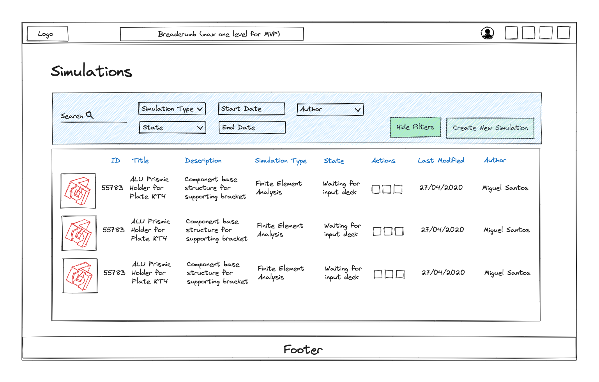
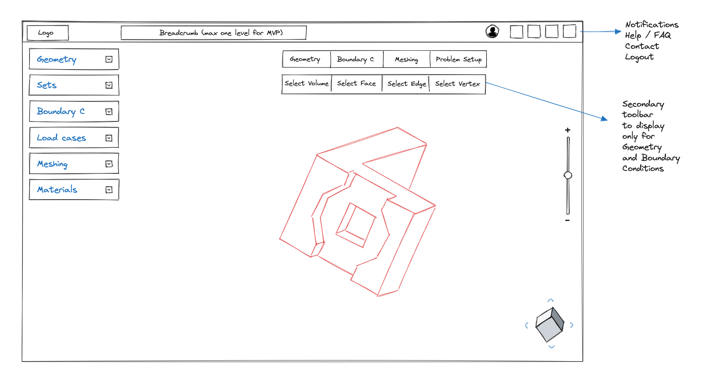
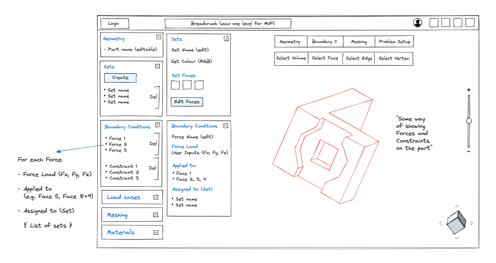
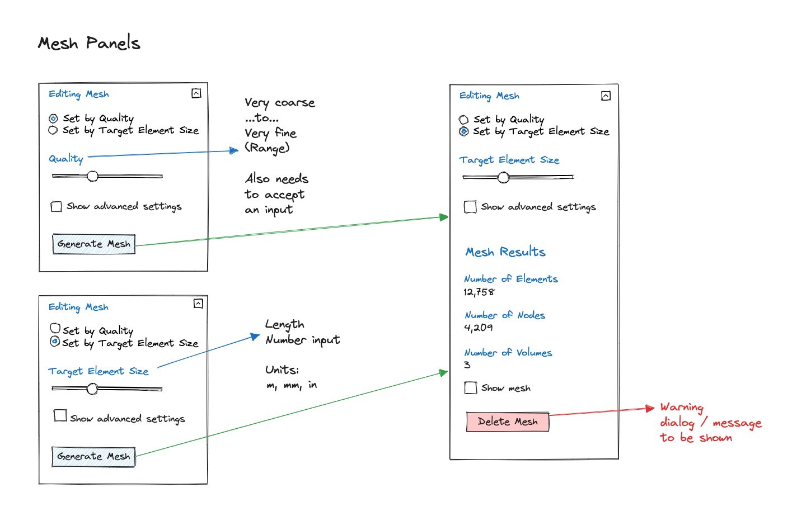
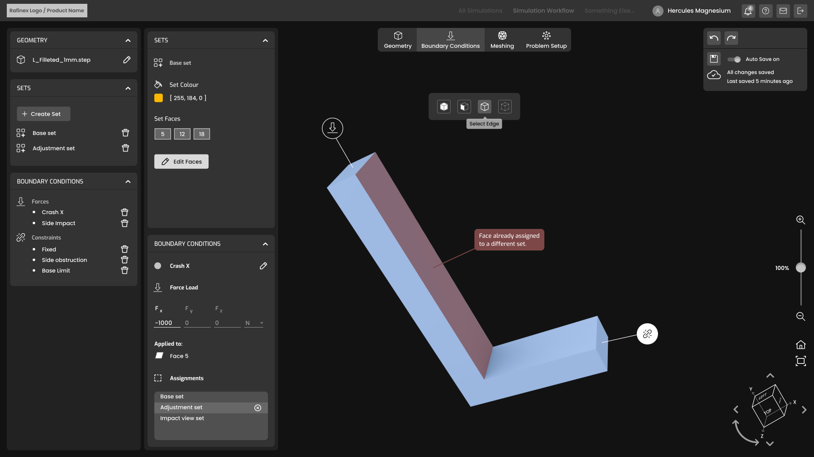

Product UX, UI design, design system and web development : Rafinex Möbius
Intro
Rafinex' SaaS product, Möbius, is among the most advanced topology optimisation technology on the market. Möbius generates robust, reliable and safe components in high-performance industries that are fit for reality and remain safe.
Further information about Rafinex may be found on its website, its YouTube channel or by following its LinkedIn page and newsletter.
UX design
As the lead UX/UI designer, I worked with the holistic team at Rafinex and understood the existing product platform, its features and what needed to be overhauled for the first release to market. With experience in product design and development in my previous role, I had the confidence and knowhow to create a compelling and intuitive product.
My first foray into the world of Finite Element Analysis (FEA) involved analysing similar products and drawing conclusions from these in their approach to user interface design, level of intuition and functionality.
I carried out a small but challenging task of what an FEA Engineer would conduct in his/her day-to-day operations, and was instructed to perform the same task using two different pieces of software, namely OnScale Solve and SimScale. I did this to deepen my understanding of GUI functions and aesthetics in this domain. I also read whitepapers and read lots of user documentation around FEA so that I could absorb as much information as possible, which would later provide validation for certain UI decisions.
In my research, three things struck me:
- There is a common theme of existing packages in the industry, which feel antiquated.
- Most packages are functionally rich, performant and comprehensive, yet are poorly designed, from a UX point of view.
- Finding functions is difficult, and performing basic tasks can be unwieldy.
I was passionate about creating something beautiful, organic and user-centric. I realised the importance of combining technical functionality while fulfilling the business need for a modern software application.
In terms of user discovery, I conducted interviews with relevant internal stakeholders to ascertain new product requirements for the typical user persona (an advanced engineer). I then collated this information into a report, and drew the key topics into a spreadsheet.
Then, I produced a series of low-fidelity wireframes according to a technical schema established by the CTO. I did this so that ideas for elements, panels and dialogues could be envisioned conceptually, before moving to high-fidelity designs.
I elected to use a table layout for the All Simulations view due to the high level of information required per simulation. The additional requirement of filters also led to a conscious decision to display data in a table, given that filtered table rows can be added and removed easily.
These wireframes are set out as below:
© Rafinex SARL – UX Study – Simulations Overview
© Rafinex SARL – UX Study – Simulations Overview
© Rafinex SARL – UX Study – Design Optimisation Panel
© Rafinex SARL – UX Study – Design Optimisation Panel
© Rafinex SARL – UX Study – Meshing Menu
Once a consensus was reached on low-fidelity wireframes, I produced a series of high-fidelity wireframes as per below. I also created an interactive prototype to demonstrate interactive parts of the application.
© Rafinex SARL – UX Study – Preliminary Prototype UX Design
© Rafinex SARL – UX Study – Drag & Drop Panels for Cloning
Engineers need to work fast and efficiently. Every second of time is crucial; the need to produce results quickly is essential. For this reason, it was considered early on that aesthetical transitions would be used sparingly, as not to delay the user in their progression through a task—particularly when most tasks are repetitive. The quickest way to carry out a task is normally the best way for the user.
For the geometry import, I crafted a drag-and-drop interface to make it as easy as possible for the user to select the appropriate STEP file. Alternatively, users can use the Browse Files function.
© Rafinex SARL – UX Study – Drag & Drop Panels Designs
© Rafinex SARL – UX Study – Design Space Panel Prototype
UI design and design system
I established a fundamental and consistent design system, which enabled consistent rhythm and aesthetics across every screen to be achieved, as well as alluding to Rafinex' corporate brand. I produced colour palettes, typographic styles, form components, layout and grid spacing rules that would later be carried forward into development.
Rafinex were keen to maintain their brand of blue as the primary colour, so I selected a complimenting secondary colour to partner with this. I also created tones for each of the user feedback states that were going to be implemented: information, success, warning and error.
Drawing upon previous experience in recognising that colours with varying opacities can lead to visual problems in build, I ensured all colours were opaque.
© Rafinex SARL – UX Study – Design System and Templated Colour Schemes for UI Elements
High-fidelity wireframes produced in the UX stage made it relatively straightforward to apply subtle uses of colour to the All Simulations listing. Given the complexity of this table and the main workflow screens, I felt it was paramount to create a minimalist and contemporary interface using splashes of colour, legible typefaces and an 8px uniform grid that allowed the elements to breathe.

© Rafinex SARL – UX Study – Pre-Production Simulation Overview Design
For the core application workflow, I decided to contain the main user controls in two vertically scrollable panels. With the majority of the screen real estate dedicated to the 3D model space, it was important for these menus to be compact yet remain accessible.
Each accordion on the far left opens up an adjacent context menu, which houses particular associated controls. Users can perform a wide range of tasks such as: apply forces to their 3D model, apply boundary conditions and view topology optimised results.
© Rafinex SARL – UX Study – Pre-Production Optimisation Results Panel Design
Frontend development
I created HTML and Sass templates for components that make up the core of the UI: forms, call to actions, accordions, modals, data tables and more. A partial core workflow can be viewed below, as well as a video recording of the main user workflow being demonstrated.
I created reusable, modular components and adopted the BEM (Block Element Modifier) class naming convention. This ensures elements are named semantically and minimises the risk of class naming conflicts with other parts of the codebase.
As of today, some features are currently being developed such as the central toolbar and its controls, but the fundamental elements are in place.
Möbius is being used today by businesses in the automotive and engineering sectors, with high levels of success.
© Rafinex SARL – UX Study – Pre-Production Meshing Display Panel Design
Media showcase
Please view the following video, which showcases some of the core product features once implemented together with the Rafinex team. I hope you enjoy!
© Rafinex SARL – UX Study – Final Workflow Animation – Further details can be found on Rafinex' YouTube channel